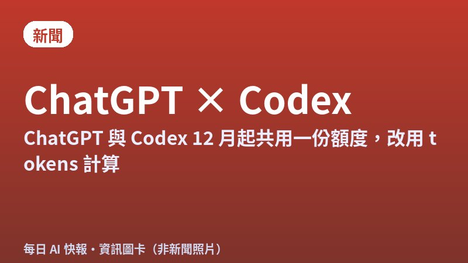
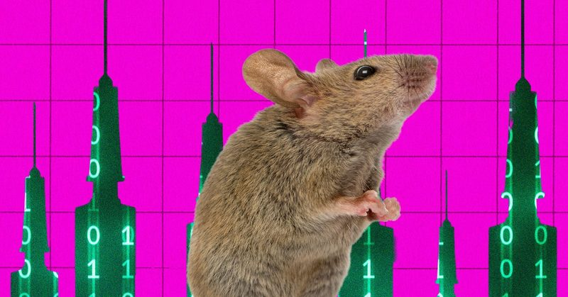
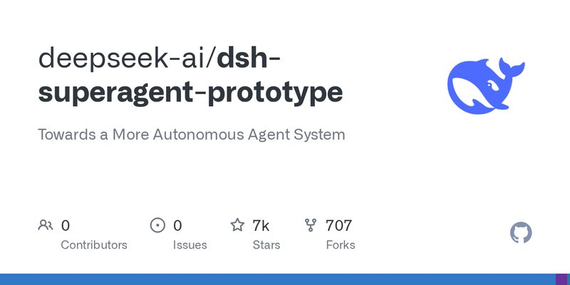
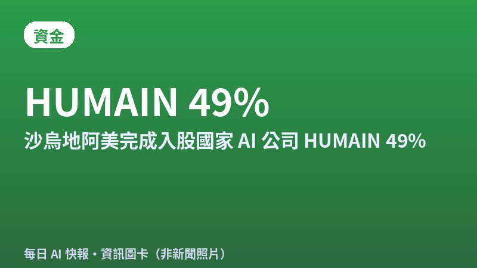

今日頭條
ChatGPT 與 Codex 將共用額度
PLUS：AI 代理操控機械手臂替小鼠注射基因療法
本期重點：OpenAI 12 月起改用 tokens 計算 ChatGPT 與 Codex 的共用額度；AI 代理第一次動手做動物實驗；另外 DeepSeek 開源「主動式」寫程式代理原型，沙烏地阿美完成入股國家 AI 公司。

資訊圖卡（總幕僚長製圖，非新聞照片）新聞#1ChatGPT 與 Codex 12 月起共用一份額度，改用 tokens 計算
OpenAI 說明中心 10 月 31 日更新的頁面寫到，從 12 月起 Plus、Pro、Business 方案的用量額度會由 ChatGPT 和 Codex 共用，並以 tokens 計算。越進階的模型、越複雜的任務會用掉越多額度，只有 Instant 快速聊天不扣額度。
💡 跟你有什麼關係：平常用 ChatGPT 聊天、又用 Codex 寫程式的人，以後兩邊會從同一個池子扣；選大模型做長任務可能更快用完。剩餘額度和重置時間可在「設定 → 用量」查看，用完可以等重置、升級或加購 credits。
⚠️ 官方只寫「12 月」，沒有公布確切日期和各方案額度大小；OpenAI 表示預期多數用戶不會比現在更常等額度重置。
📰 原始來源：OpenAI 說明中心（2026-10-31 更新） ↗
圖：WIRED／Exin Therapeutics研究#2AI 代理操控機械手臂，替活體小鼠做腦部注射
WIRED 10 月 31 日報導，舊金山生技新創 Exin Therapeutics 讓 AI 代理從 19 種候選基因療法中選一種，自己決定注射的腦區與座標，再操控機械手臂和針頭替一隻癲癇小鼠注射。開顱由獸醫外科醫師完成，注射計畫需人類核准，現場也設有可切斷馬達的緊急按鈕。
💡 跟你有什麼關係：這是 AI 從「給建議」走到「直接操作實驗設備」的例子，未來實驗室可能更常讓 AI 動手做研究；同時也凸顯人類把關、緊急停止機制有多重要。
⚠️ 團隊先測試的 Claude Opus 5.5 拒絕執行，後改用 Claude Sonnet 5；過程中設備座標系統出錯延誤。療法是否真的減少癲癇發作還在等結果，目前沒有同儕審查的成果。
📰 原始來源：WIRED（2026-10-31） ↗
圖：GitHub／deepseek-ai工具#3DeepSeek 開源「主動式」寫程式代理研究原型
DeepSeek 10 月 31 日在 GitHub 公開 dsh-superagent-prototype，以 MIT 授權開源。它是一個盯著單一 GitHub repo 的寫程式代理：有權限的人交辦工作後，它會開工作項目、在自己的工作區處理，再回到原本的對話回覆，例如送出 pull request，另有網頁面板列出需要人處理的事。
💡 跟你有什麼關係：AI 代理正從「你問一句它答一句」變成能長時間在背景接案的同事。對一般人來說，未來像客服、文件整理這類工作，也可能出現這種「交辦後自己完成、只在需要時找人」的工具。
⚠️ DeepSeek 在說明中明講這是研究原型、不是正式產品，可能有錯誤，且與內部版本和文章描述的設計不完全相同。
📰 原始來源：DeepSeek GitHub（2026-10-31） ↗圖：TechCrunch／Getty Images觀點#4Apple 執行長 Ternus：不想「為了 AI 而做 AI」
TechCrunch 10 月 31 日整理 Apple 執行長 John Ternus 接受 WIRED 專訪的內容。Ternus 9 月初正式接任，他承認外界常說 Apple 的 AI 落後，但表示「很喜歡我們現在的位置」，強調 Apple 一定會在新產品用 AI，但不想為了 AI 而推 AI。
💡 跟你有什麼關係：這代表 Apple 接下來的 AI 功能，可能會更偏向藏在既有功能裡，而不是另外推一個聊天機器人。用 iPhone 的人，未來感受到的可能是相機、Siri、輸入等功能慢慢變聰明。
⚠️ 被問到 AI 代理會不會讓 App 變得不必要時，Ternus 只說做產品是「很人性、很個人的事」，沒有正面回答。
📰 原始來源：TechCrunch（2026-10-31） ↗
資訊圖卡（總幕僚長製圖，非新聞照片）資金#5沙烏地阿美完成入股國家 AI 公司 HUMAIN 49%
沙烏地主權基金 PIF 與沙烏地阿美（Aramco）11 月 1 日宣布完成交易：Aramco 透過全資子公司取得 HUMAIN 49% 股權，PIF 保留 51%。Aramco 今年投入約 99 億里亞爾（約 26 億美元）現金，並移轉自家 AI、運算與數位資產；HUMAIN 計畫在 2030 年前建置 3 GW 的 AI 資料中心。
💡 跟你有什麼關係：中東石油資金正大量轉進 AI 基礎建設，全球搶算力、搶晶片的競爭會更激烈，也可能影響 AI 服務和電子零件的價格與供應。
⚠️ 3 GW 是 2030 年的規劃目標，不是已完成的容量。
📰 原始來源：Aramco 官方新聞稿（2026-11-01） ↗圖：TechCrunch／Getty Images政策#6OpenAI 想把資料中心改稱「AI 運算園區」
TechCrunch 11 月 1 日引述 Axios 報導，OpenAI 準備在美國期中選舉後發動公關攻勢。全球事務長 Chris Lehane 提出的方向包括 AI「速限」、讓民眾覺得 AI 對日常有幫助、推動美國參與制定全球標準，以及把資料中心改稱「AI compute campuses」。
💡 跟你有什麼關係：資料中心因為耗電、用水在美國各地引起反彈，科技公司開始在用詞和溝通上下功夫。未來看到「AI 園區」這類說法時，可以留意它實際上就是大型資料中心。
⚠️ 報導用語是「可能」改名，OpenAI 尚未正式宣布採用新名稱。
📰 原始來源：TechCrunch（2026-11-01） ↗✅ 2026/11/2（一） 可以做：如果你是 ChatGPT Plus 或 Pro 用戶，可以先到「設定 → 用量」看看自己現在的使用量，12 月改制後比較好對照。
🗂️ 過去 14 天